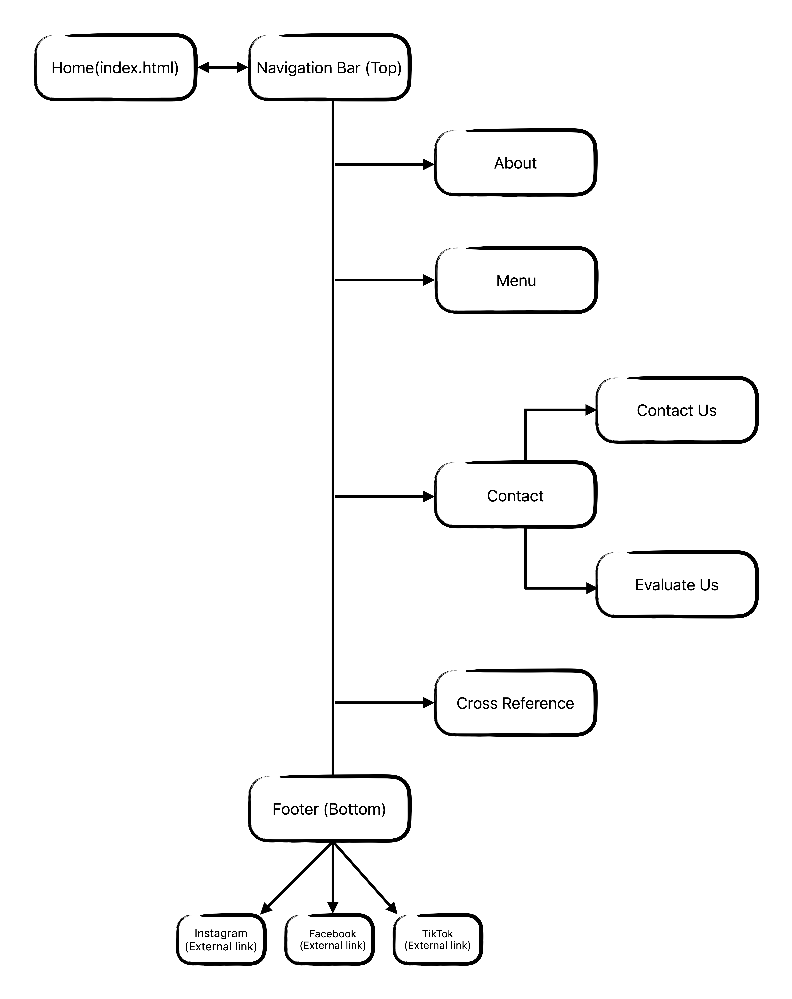

Cross-Reference List
Project Requirements Links and Descriptions
2.1 Nine Websites
Similar Business Websites
- Website 1: Backatown Coffee Parlour
- The design and layout of the website is aesthetically appealing, specifically the use of different design techniques such as the semi-transparent navigation bar that stays at the top when scrolling down and the incorporation of an online menu.
- Website 2: Patisserie Royale
- The way that the website showcases their desserts is enticing, both the images that were selected and the transitions they use to display them.
- Website 3: The Baker and the Flute
- I like how this website incorporates innovative avenues for customers to engage with their products such as being able to order a cake online, a system for reserving a table and a menu page that displays their offering the same way you would see it when sitting down at a restaurant/ cafe.
Downloadable Resources Websites
- Website 1: Pexels
- Great resource for free high-quality images or videos, I like the variety and find that they have more to choose from than other websites.
- Website 2: Pixabay
- Another great resource for stock images but I like that it is not limited to images but also has vectors, music, sound effects and GIFs.
- Website 3: Feather Icons
- Simple and functional website with tons of open-source icons that are easy to download and use.
Technical Information Websites
- Website 1: W3 Schools
- This website seems like a go-to website for most people to learn about HTML, CSS and JavaScript, I like that it is intuitive and has examples of everything you need to learn the basics of web-design coding.
- Website 2: CSS Tricks by DigitalOcean
- This is an interesting one, it has a myriad of articles on CSS and web-design from various experienced web-designers and developers, I like that it goes into topics that are not usually covered in other websites.
- Website 3: MDN Web Docs
- This is a great resource for learning about web-design, I like that it has comprehensive documentation and resources that are easy to understand for beginners as well as a guided curriculum.
2.2 Minimum Requirement Features
2.2.1 HTML5 Requirements
- A. HTML5 Structural Tags
- Linked to the about page where I used several HTML5 structural tags such as <article> for the summary of the history of Helvaci Ali, <aside> for the quote and <cite> tag to reference the person who said the quote. This section also uses <p> tags, <h3> tags and a <blockquote> tag for the actual quote.
- B. Inline Images
- The link takes you to a section on the homepage that shows an inline image of Maras ice cream. This image is a clickable link and that link takes you to the inline images on the menu page that are static.
- C. Special Characters
- Copyright symbol displayed at the bottom of the footer to the extreme left. It shows the version of the website.
- D. Meta Tags
- This link will highlight the code snippet below which shows the meta tags used in the head section of the website. The meta tags provide a brief description of the website, keywords and viewport meta tag to ensure the website is responsive.
-
<head> <meta charset="UTF-8"> <meta name="viewport" content="width=device-width, initial-scale=1.0"> <meta name="description" content="Helvaci Ali - Experience the taste of Turkey's famous semolina ice cream"> <meta name="keywords" content="dondurma, turkish, helwa, helvaci, ice cream, dessert, sweets, Mississauga"> <meta name="author" content="Mohamad Arnaout"> </head> - E. Footer with Time Stamp
- Date and time of last update. It is updated automatically through the use of JavaScript. The location of the time-stamp is at the bottom of the footer on the extreme right.
2.2.2 CSS3 Requirements
- A. CSS3 Formatting
- Paragraph and Header
- An example of h2 and h3 headers and formatted paragraphs on the about page. They are formatted with a specific font-size and font-weight. The quote bubble uses blockquote > p to add a text-shadow to the quote paragraph.
- List
- Highlights the navigation links where the list items are targetted to hide the default list-style.
- Background Image
- This link navigates to the Home page where the hero section is formatted with background image. The background image is used to display the image and a gradient overlay to increase legibility of the navigation links.
- Tables
- This links to the Webpage Ratings section of the evalutaion form where the user is given the option of rating each web page on a scale of 1-5. The table is formatted to display the radio buttons as a box with a number from 1 - 5 and spaced evenly apart. The titles corresponding to the rating options are displayed beside the radio buttons.
- Forms
- This link takes you to the Contact Us page and highlights the contact form which is formatted using several CSS3 techniques including the size and colour of the buttons and input fields. These will be discussed in more detail in the form specific section of the cross-reference page.
- B. Contextual/ Attribute Selectors
- Attribute Selector 1
- Link takes you to the contact form where an attribute selector was used on the reset button to have a red background color (attribute[type="reset"]).
- Attribute Selector 2 and Sibling Selector
- This link navigates to the Evaluation web page and shows the star rating section where attribute selectors were used in combination with the subsequent-sibling combinator to change the star colour to gold when hovered over and for the selected stars to remain highlighted.
- Descendant Selector
- Link takes you to the Home page where the heading of the discover section was styled using the descendant combinator. Specifically, the font size and margins were applied.
- Child Combinator
- Link takes you to the About page where the child combinator was used to add text-shadow to the paragraph and box-shadow to the quote bubble.
- Multiple Selector
- Link will highlight the box that you are currently viewing. Multiple selectors were used to style the text and font on this page collectively. The purpose of this was to increase the readability of the large amount of text. Multiple selectors were also used to style the input fields on the contact form on the contact page which can be viewed here.
- C. Color Styles(RGBA & HSLA Implementation)
- RGBA and HSLA colors were implemented throughout the website. This link will highlight the navigation bar where rgba(0,0,0,0.125) was used to create a semi-transparent look to the navigation bar when scrolled all the way to the the top of the page for better contrast when viewing the links.
- D. Dynamic Pseudo-classes
- Highlights the navigation bar links to showcase the use of dynamic pseudo-classes. Here, the first-of-type (Home in this case) is green and the last-of-type is a brown-orange (Cross-Reference in the nav). All links on the website turn blue on focus or hover but only the main body links turn purple after being visited. The hyperlinks in the footer additionally have an underline when hovered over.
- E. Background Styles
- Background Styles
- This link will take you to the top of this page and highlight the background image. Styles such as background-size, background-origin and background-clip were used to position the image.
- Another example of this is the background image on the Home page which can be viewed here. The background-size property was applied here.
- Radius, margins, padding and border styles
- This link takes you to the quote section of the about page to showcase the use of radius, padding, border styles and a number of other styles to style and position the elements.
- F. Drop Cap
- Navigates to the bottom of the homepage where drop-cap was implemented into the first letter of a short quote.
- G. Define Document Content and Style
- Navigates to the quote section of the About page where the document content are defined with class and id properties. The classes are used extensively here to style the document for example .dicover-content sets a width of 65%, adds padding, adjusts the letter-spacing and line-height. #quote-container is used to position the quote section as well as style it with a background color, border and a border shadow.
- H. Layout Techniques
- i. Grid Layout Techniques
- This link takes you to the Contact page where I used grid layout techniques to style the page.
- ii. Flex Layout Techniques
- The Home page was designed solely with flex layout techniques as per the requirements. Additionally, flex was used for several parts of the website including the navigation bar and footer.
- iii. Float Layout Techniques
- This link takes you to the Menu page where floats and clearfix were used for the page layout. An example of this is the .dish-info and .dish-image classes which use float to position the image to the left and the text to the right.
- iv. Positioning Layout Techniques
- This link takes you to the about page where positioning was used to position all the elements within the page. (Ex. position: relative, margin-bottom: 20px etc. for "Helvaci Ali: A Legacy of Tradition")
- I. Text and Box Shadows
- Navigates to the blockquote section of the about page where both text shadow and box shadow were used to style the box that contains a statement from Helvaci Ali.
- J. Transform Rotate Feature
- On the about page there is an svg of a turkish flag that I applied the CSS3 transform rotate property to.
- K. Image Opacity
- Image Opacity 1
- This link scrolls this page to the top to highlight the background image applied to the header section. There is an opacity of 0.4 applied to the image to make the navigation links more legible.
- Alternatively, you can view another example of this on the Menu page.
- Image Opacity 2
- This link will take you to the top of the about page where opacity was used for the same purpose of the first example, to increase legibility of the navigation bar.
2.2.3 Web Form Requirements
- A. Form Elements
- This link highlights the "Reason for Contacting Us" select menu input field on the Contact us form. The form incorporates several HTML5 form elements and this specific example uses the select element to allow the user to choose from a list of options.
-
<label for="reason">Reason for Contacting Us<span class="required"> *</span></label> <select name="reason" id="reason" required> <option value="" disabled selected>Select Reason</option> <option value="order">Order</option> <option value="complaint">Complaint</option> <option value="suggestion">Suggestion</option> <option value="feedback">Feedback</option> <option value="other">Other</option> </select> - B. Form Styling
- This example highlights the buttons on the Contact us form. The buttons are styled with CSS to have a hover effect and different background colours for both buttons.
-
input[type="submit"] { background-color: hsla(129, 60%, 35%, 0.751); } input[type="reset"] { background-color: hsla(0, 100%, 50%, 0.5); } input[type="submit"]:hover, input[type="reset"]:hover { background-color: #0056b3; } - C. Inline Form Validation
- Inline validation feedback is provided using focus pseudo-classes for all the required fields. The example highlights the "Email address" input field where the CSS provides a red border when the field is in focus until the user inputs a valid email address, at which point the border turns green.
-
input:focus:invalid { border: 2px solid red; } input:focus:valid { border: 2px solid var(--highlight-text-color); }
2.2.4 Multimedia Requirements
- A. i. Sound
- 30 second audio clip of Turkish music with controls under the banner image on the menu page.
- A. ii. Video
- Link to the homepage where there is a 30 second video clip of Turkish coffee being made on top of coal.
- B. Transitions & Animations
- Link to the menu page where a keyframes animation is applied to dynamically display the music invitation banner and a transition is applied to the hover effect of the banner.
-
.music-invitation { background-color: var(--accent-color); opacity: 0; transform: translateY(-80px); animation: drop-in 1.5s forwards; transition: background-color 0.7s ease; } @keyframes drop-in { to { opacity: 1; transform: translateY(0); } }
2.2.5 JavaScript Requirements
- A. Programming Constructs
-
- A. i. Variables, Arithmetic, Functions, Subroutines, Operators etc.
- This link highlights the Navigation clock feature where 9 of the 10 javascript requirements are implemented. Code snippet examples of each are provided below.
-
//======================================= // FILE: main.js SECTION: Time Clock //======================================= // FUNCTION EXAMPLE function formatTime(date) { // CONDITIONAL OPERATOR EXAMPLE const formattedHour = hour === 0 ? 12 : hour > 12 ? hour - 12 : hour; // VARIABLE (const formattedHour) // ARITHMETIC (hour - 12) // COMPARISON (hour > 12) // LOGICAL OPERATORS (hour > 12 ? hour - 12 : hour) // CONDITIONAL STATEMENT EXAMPLE if (isStoreOpen(currentHour)) { clockElement.className = 'nav-clock open'; clockElement.textContent += ' Open'; } else { clockElement.className = 'nav-clock closed'; clockElement.textContent += ' Closed'; } } // SUBROUTINE EXAMPLE updateDisplay(); // RUNNING TIME COMMAND EXAMPLE setInterval(updateDisplay, 1000); } - A. ii. Arrays
- This link takes you to the contact form section of the Contact us page to showcase the implementation of arrays, the remaining javascript requirement. The Array is used to handle the form fields and validate them. It will retrieve the specified form elements with cOrder ID then uses .forEach to iterate over it. The relevant code snippet is provided below.
-
//=========================================================== // FILE: contact-form.js SECTION: Contact Form Validation //=========================================================== // ARRAY EXAMPLE form.querySelectorAll('input, select, textarea').forEach(field => { if (!field.parentElement.classList.contains('input-container')) { const wrapper = document.createElement('div'); wrapper.className = 'input-container'; const errorSpan = document.createElement('span'); errorSpan.className = 'error-message'; field.parentNode.insertBefore(wrapper, field); wrapper.appendChild(errorSpan); wrapper.appendChild(field); } });
- B. System Date
- This example will highlight the relevant code snippet below for the Navigation Clock feature that utilizes the System Date to display the current time.
-
//======================================= // FILE: main.js SECTION: Time Clock //======================================= // SYSTEM DATE EXAMPLE const now = new Date(); - The clock feature is displayed on the navigation bar and is viewable at all times. It has live updates as well as a border and status indicator that changes colour depending on whether the store is open or closed.
- C. Form Input Validation
- This link takes you to the contact form section on the Contact us page. The form uses form validation functions to prevent the form from being submitted if the required fields are empty or with invalid entries. An error message will be displayed above the relevant input field. The code snippet is provided below.
-
//========================== // FORM VALIDATION FUNCTIONS //========================== form.addEventListener('submit', function(event) { clearAllErrors(); let isValid = true; // VALIDATION LOGIC EXAMPLE const email = form.querySelector('input[name="email"]'); const emailValue = email.value.trim(); const emailRegex = /^[^\s@]+@[^\s@]+\.[^\s@]+$/; if (!emailValue) { showError(email, 'This field is required'); isValid = false; } else if (!emailRegex.test(emailValue)) { showError(email, 'Please enter a valid email'); isValid = false; } if (isValid) { alert('Form submitted successfully!'); form.submit(); } }); // RELATED FUNCTIONS // Displays error messages function showError(element, message) { // ... } // Clears all error messages function clearAllErrors() { //... - The validation functions check the form fields like full name and email. If they are empty or invalid, it calls the showError function to display relevant error messages. Invalid entries are prevented from being submitted with event.preventDefault() and clearAllErrors() is called to clear the error messages.
- D. JavaScript Alerts
- Navigates to the submit button on the contact form section of the Contact us page. If a user inputs invalid entries in to the fields then clicks submit, an alert message will prompt the user to correct them and error messages are displayed at the top of the input fields. An alert is also displayed if the user successfully completes the form without any errors.
-
//================ // ALERT EXAMPLES //================ if (isValid) { alert('Form submitted successfully!'); } if (!isValid) { event.preventDefault(); alert('Please correct the errors in the form before submitting.'); }
2.2.6 Responsive Design
- Responsive Design Techniques on Different Devices
-
- A. i. Mobile Design
- The link takes you to the Menu page where the image and description of the menu items will switch to a vertical layout if the screen size is below 768px. You can also view another example of the mobile design on the Evaluation page.
- More notable changes are the navigation bar at the top and the footer elements. The navigation links become hidden within a hamburger icon and the footer content are hidden within an accordion.
- Code snippets are provided below to show some of the different examples of the mobile design. Flexbox, grid, float and positioning are all utilized for these design changes.
-
//=========================================================== // FONT SIZES //=========================================================== @media (max-width: 767px) { body { font-size: 16px; line-height: 1.5; } //=========================================================== // NAVIGATION BAR //=========================================================== .menu-toggle { display: flex; flex-direction: column; cursor: pointer; z-index: 1001; } .menu-toggle .bar { width: 25px; height: 3px; background-color: var(--text-color); margin: 3px 0; transition: 0.4s; } @media (max-width: 767px) { .main-nav { display: none; } .nav-links li { margin: 10px 0; opacity: 0; transform: translateX(-50px); transition: opacity 0.3s, transform 0.3s; text-align: center; } .nav-links.active li { opacity: 1; transform: translateX(0); } } //=========================================================== // About Page //=========================================================== @media (max-width: 767px) { .discover-content, #quote-container { position: static; width: 100%; padding: 0; } } //=========================================================== // SECTION: Menu Page //=========================================================== @media screen and (max-width: 350px) { .dish-image { float: none; display: block; width: 100%; } .menu-item { width: 60%; margin: 10px auto; padding: 0; } .dish-info { width: 100%; clear: both; text-align: center; margin-top: 10px; } } - A. ii. Tablet Design
- This link takes you to the About page to show some minor adjustments to the positioning of different elements for tablet design. The CSS code snippets provided below show the font size changes, the changes to the hero image and the changes to the quote reference on the About page.
-
@media (min-width: 768px) and (max-width: 991px) { body { font-size: 17px; } h1 { font-size: 2rem; /* ~30px */ } h2 { font-size: 1.5rem; /* ~22.5px */ } h3 { font-size: 1.25rem; /* ~18.75px */ } p { font-size: 1rem; /* ~15px */ } /*================================================ Home Page Styles ================================================*/ @media (min-width: 768px) and (max-width: 991px) { .hero { height: 40vh; } .hero-content { gap: 1.5rem; } } /*================================================ About Page Styles ================================================*/ @media (min-width: 768px) { .reference { bottom: -40%; - A. iii. Desktop Design
- This link takes you to the Contact Us page which utilises media queries to adjust the grid layout to accomodate larger screens. The contact form and the embedded map are displayed side by side instead of one above the other like in the mobile design and are spaced farther apart. Other adjustments include hiding of mobile navigation and an increased font size. There is also an additonal media query to target even larger screens. The relevant CSS code snippets are provided below.
-
@media (min-width: 992px) { html { font-size: 19px; } h1 { font-size: 2.5rem; } h2 { font-size: 2rem; } h3 { font-size: 1.5rem; } p { font-size: 1.1rem; } } @media (min-width: 992px) { .main-nav .submenu { position: absolute; top: 100%; left: 50%; transform: translateX(-50%); background-color: inherit; min-width: 100px; box-shadow: 0 2px 4px var(--shade-color-light); border-bottom-left-radius: 5px; border-bottom-right-radius: 5px; display: none; } .menu-toggle { display: none; } /*================================================ Contact Page Styles ================================================*/ @media screen and (min-width: 992px) and (max-width: 1400px) { .grid-container { column-gap: 300p; max-width: 1400px; grid-template-rows: 15% 5% 15% 10% 30%; @media screen and (min-width: 1400px) { .grid-container { gap: 40px; column-gap: 100px; max-width: 1600px; grid-template-rows: 10% 5% 15% 10% 30%;
- B. Contextual Selectors for Sub-menus and Navicon
- This link will highlight the code snippet below which shows the CSS used to style the mobile navigation. The first example below shows the selector targetting active navigation items that have submenus.
- The second example shows contextual selectors for styling the navicon. To view the mobile design with the navicon you must resize the browser window or use a mobile device.
-
//=========================================================== // FILE: mobile.css SECTION: Mobile Navigation //=========================================================== .submenu { max-height: 0; overflow: hidden; transition: max-height 0.3s ease; } .nav-item.has-submenu.active .submenu { max-height: 300px; } // NAVICON EXAMPLE .menu-toggle { display: flex; flex-direction: column; cursor: pointer; z-index: 1001; } .menu-toggle .bar { width: 25px; height: 3px; background-color: var(--text-color); margin: 3px 0; transition: 0.4s; } - C. Responsive Images
- This link takes you back to the Home page and highlights the hero image. This image like the other images on the site has styles that allow it to scale proportionally or adjust to accomodate different screen sizes. The code snippet below shows the CSS used to achieve this.
-
// BASE DESIGN .hero { display: flex; flex-direction: column; justify-content: center; background-image: linear-gradient(rgba(0, 0, 0, 0.74), rgba(39, 26, 8, 0.462)), url("../../media/images/pistaDondurma.jpg"); background-size: cover; background-position: center; background-repeat: no-repeat; height: 60vh; } // MOBILE DESIGN @media (max-width: 767px) { .hero { height: 47vh; background-size: 175% auto; background-position: 75%; background-repeat: no-repeat; } // TABLET DESIGN @media (min-width: 768px) and (max-width: 991px) { .hero { height: 40vh; } .hero-content { gap: 1.5rem; }
2.3 Documentation
Web Project Documentation
- A. Project Documentation
-
Download Project Documentation (PDF)
B. Web Page Flow
2.4 Demonstration Evaluation Form
Evaluation Form
- Feedback Form
- The form is a simple feedback form that is accessible from the main Navigation bar and the footer navigation. It is hidden within the Contact sub-menu, under Evaluate Us.
- The form is provides an opportunity for the business to grade the website based on the design and usability. The first part of the form has several categories that can be rated from unsatisfactory to excellent so the business can pinpoint the areas of concern. They can then provide their overall score using a star rating system. The second portion of the form gives the business the ability to rate each page to further pinpoint the improvement areas. The final part is the comment section where any additional feedback can be provided.